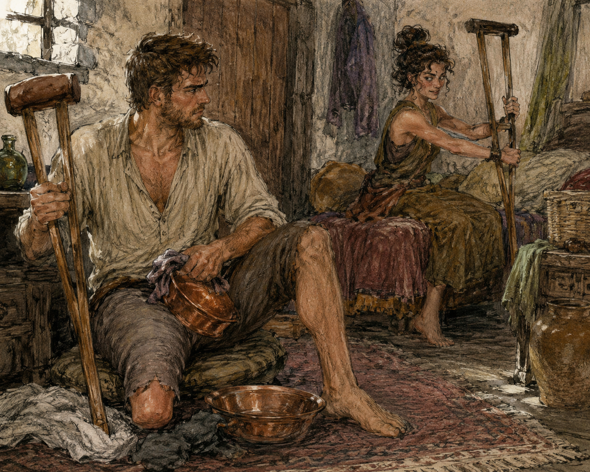

I told Hessa about the fire because she asked why my green shirt smelled like smoke.
I was not wearing the green shirt.
This was unfair.
“You smelled it yesterday?”
“No.”
“Then how do you know?”
“Keeper told Nerin. Nerin told me.”
I stared.
“Hessa.”
“Yes?”
“You have access to confidential medical information.”
“Yes.”
“And apparently none of the rest of Carrow is confidential.”
“Correct.”
She held out her hand.
“Right.”
I gave her my right hand.
She checked thumb.
Palm.
Wrist.
Forearm.
Grip.
Fingertips.
Nothing.
“Any tingling?”
“No.”
“Since last time?”
“No.”
“Pain?”
“No.”
“Weakness?”
“No.”
“Cold?”
“No.”
“Fire?”
“No.”
“That was not a symptom question.”
“I know.”
“Burned?”
“No.”
“Smoke?”
“Some.”
“Breathing trouble?”
“No.”
“Cough?”
“No.”
“Headache?”
“No.”
“Fall?”
“No.”
“Near fall?”
I thought about the crowd.
The chair being moved while I was sitting in it.
The painted tree.
“No.”
“Why did you hesitate?”
“Theatre.”
“That is not a physical event.”
“It is several physical events badly organized.”
Hessa looked at me.
I explained the evacuation.
Not the line.
Not yet.
The crowd.
Lyssa getting ahead.
The blocked route.
The unrailed steps.
Backstage because level was safer.
People moving faster than I could.
Hands gripping harder.
No fall.
No burn.
No wound problem.
No thumb sensation.
Hessa listened.
“Residual limb afterward?”
“Fine.”
“Morning after?”
“Baseline.”
“Hands?”
“Tired. Not painful.”
“Next day?”
“Fine.”
“Good.”
She checked the residual limb anyway.
Of course.
Then she sat back.
“You went back.”
Fuck.
“Nerin?”
“No.”
“Keeper?”
“No.”
“How?”
“You said ‘theatre’ like it had become a location you knew.”
That was unreasonable.
Also accurate.
“I returned a page.”
Hessa waited.
I hated professionals.
“Then stayed.”
“Why?”
“I don't know.”
“Medical?”
“No.”
“Then I don't care.”
Excellent.
She reached for the copper strip.
I relaxed.
Slightly.
Then she did not put charcoal on me.
I stared at her hand.
She noticed.
“You are doing it again.”
“What?”
“Inferring from absence.”
“There is no charcoal.”
“Yes.”
“Are we drawing only?”
“I have not decided.”
“You decided before I arrived.”
“Mostly.”
“Then you have decided.”
“No.”
“That is how decisions work.”
“Sit.”
I sat.
Right forearm on folded towel.
Crutches against the wall.
Right foot planted.
Residual limb supported.
Left hand loose.
Hessa placed the copper strip beside my right arm.
Straight.
No marks.
“Minimal draw.”
“That is all?”
“That is first.”
Fine.
I drew.
The draw came cleanly enough.
Trunk.
Right side.
Arms.
Left thigh to knee.
Ordinary phantom foot below the table.
No unusual extension.
No thumb sensation.
No wrist movement.
“Stable?”
“Yes.”
She watched the copper.
“Hold.”
I held.
Nothing happened.
Which was probably the point.
Hessa moved around the table.
Then picked up my right crutch.
I looked at her.
“Do not move.”
“I need that.”
“You are sitting.”
“I will need it later.”
“I am not stealing it.”
“That remains to be seen.”

She set it on the opposite side of the room.
I stared.
The draw stayed.
“Why?”
“No reason you need.”
“That is not reassuring.”
“Stable?”
“Yes.”
She picked up a cup.
Moved it.
Then opened the cabinet.
Then closed it.
“Are you attempting distraction?”
“No.”
“You are bad at it.”
“I am doing ordinary things in my room.”
“You moved my crutch.”
“That was ordinary for me.”
“Not for my crutch.”
The draw shifted slightly.
Not location.
Attention.
Maybe.
I tightened.
Hessa said, “Do not fix something I did not tell you was wrong.”
I stopped.
“How do I know whether it is wrong?”
“You tell me what changed.”
“Attention.”
“Mana?”
“I don't know.”
“Good.”
She looked at the copper.
“Still responding.”
I held.
She moved my crutch back.
“Release.”
I released.
“That was a test?”
“Yes.”
“Of what?”
“Whether you could maintain a minimal draw while I irritated you.”
“You have extensive baseline data.”
“Yes.”
“Result?”
“You remained irritating.”
I waited.
She wrote.
No shaping.
That should have disappointed me.
It did.
Less than expected.
That was suspicious.
Hessa looked up.
“You are quieter.”
“I am learning.”
“No.”
“Rude.”
“You are waiting for the second part.”
“Yes.”
“Good.”
She took the charcoal.
There.
One mark.
Inside right forearm.
Not two.
Closer to elbow than wrist.
She drew a small circle around it.
I stared.
“Circle?”
“Yes.”
“Why?”
“Because I wanted a circle.”
“That cannot be the reason.”
“It can.”
I should have gone back to theatre.
No.
Absolutely not.
Hessa sat.
“Last time I asked you to begin an alteration and then stop feeding it.”
“Yes.”
“The altered response diminished without the underlying draw ending.”
“Yes.”
“And your wrist moved.”
“Yes.”
“Today I want to ask a different question.”
“Deliberate reduction.”
Her eyes narrowed.
“Did you read my notes?”
“No.”
“Then stop predicting.”
“I am right.”
“That is not the point.”
I smiled.
She did not.
“Maybe.”
That was revenge.
“What do you want?”
“If we proceed, you will draw minimally. I will tell you to shape toward the circle. Small. Right forearm only.”
“Same side.”
“Yes.”
“Then?”
“When I say RETURN, I want you to deliberately reduce the alteration toward your ordinary underlying draw.”
“Not release.”
“Correct.”
“Not stop feeding and wait.”
“Correct.”
“Actively reduce.”
“Yes.”
“How far?”
“As far as you can without doing anything else.”
“That is vague.”
“Good.”
“No external effect.”
“No.”
“No Barrier.”
“No.”
“No left.”
“No.”
“One attempt?”
“One.”
“Stop conditions?”
“Pain, tingling, numbness, cold, weakness, wrist rotation, hand spread, familiar Barrier-like setup, anything you think is concerning, anything I think is concerning.”
“And if I cannot reduce it?”
“I tell you to release.”
“And if I do?”
“I tell you what I saw.”
“Then no second attempt.”
“No.”
I looked at the circle.
This was more difficult than stopping.
Maybe.
Stop feeding had been letting go of an action.
This was performing another action in the opposite direction without knowing whether opposite existed.
Do not make metaphor.
I looked at Hessa.
“Ready.”
“Minimal draw.”
I drew.
Ninth.
I did not count aloud.
Hessa probably had.
The draw settled.
No thumb.
No wrist.
Ordinary phantom foot.
“Stable?”
“Yes.”
“Circle.”
I shaped.
Small.
The alteration gathered in the right forearm.
Narrower than Ch103 palm disaster.
Not as narrow as a point.
A patch.
It leaned toward the charcoal circle.
Hessa watched.
Copper responded.
“Enough.”
I stopped increasing it.
Not RETURN yet.
Interesting.
The patch remained.
Or felt like it remained.
Edges soft.
Center clearer.
Hessa waited one heartbeat.
Two.
“RETURN.”
I tried to reduce it.
Nothing.
Not initially.
The instinct was to release.
Whole draw.
Easy.
Forbidden.
Not forbidden.
Wrong task.
I held the draw.
Tried again.
The altered patch thinned.
Maybe.
I did not know if I was imagining thinning because I wanted it.
Then the outer edge nearest my wrist faded.
The center moved.
Not toward baseline.
Toward the elbow.
Fuck.
I stopped trying.
“It's moving.”
“I see a change.”
“Toward elbow.”
“Continue only if you think you can.”
That was worse than instruction.
I tried smaller.
Not pushing.
Not pulling.
No metaphor.
Just less there.
The patch narrowed.
The elbowward edge stopped.
The center dimmed.
Copper response changed.
I felt my fingers want to curl.
Not movement yet.
Want.
“Hand.”
Hessa's voice sharp.
“Wanting to curl.”
“Release.”
I released.
Everything dropped.
Mana gone.
My fingers stayed open.
No movement.
No tingling.
No pain.
No numbness.
Hessa took my wrist.
Then fingers.
Thumb.
Grip.
Temperature.
“Any symptom now?”
“No.”
“Forearm?”
“Normal.”
“Phantom?”
“Foot.”
“Ordinary?”
“Yes.”
She waited.
I waited.
The urge to curl did not return.
Hessa wrote.
I wanted to know.
She kept writing.
I considered the theatre woman saying I disappeared into the page.
No.
Not here.
Different thing.
I put it away.
Hessa looked up.
“What did you experience?”
I told her.
Initial attempt to reduce did nothing.
Then wrist-side edge faded.
Center shifted toward elbow.
I stopped.
Tried smaller.
Patch narrowed.
Elbowward movement stopped.
Center dimmed.
Fingers felt like they wanted to curl.
No actual movement.
Release.
No symptom after.
She nodded.
“That matches enough of what I observed to be useful.”
“Did I return it?”
“Partly.”
There.
My chest lifted.
Hessa raised her hand.
“Do not.”
“I did not say anything.”
“Your face did.”
“What does partly mean?”
“It means after the RETURN instruction, the altered response changed in the direction of less alteration for part of the attempt.”
“And moved wrong first.”
“Yes.”
“And then less.”
“Yes.”
“While draw stayed.”
“Yes.”
“So deliberate reduction is possible.”
“No.”
I stared.
“Hessa.”
“One attempt supports that you may have some deliberate influence over reducing an alteration while maintaining a draw.”
“That is the same sentence with fear added.”
“That is why I am the practitioner.”
I leaned back.
“Did my fingers almost move?”
“You reported an urge. I did not see movement.”
“Related?”
“Unknown.”
“Barrier?”
“I did not see the Ch103 pattern.”
“Old trained pattern?”
“Not one I recognized.”
“Then why stop?”
“Because the task had already produced useful information and you reported an unrequested motor urge.”
Fair.
Annoying.
“Does this count as shaping?”
“Yes.”
“Fifth attempt.”
“Yes.”
“Ninth draw.”
“Yes.”
She had counted.
“Can I cast?”
“No.”
“External effect?”
“No.”
“Repeat tomorrow?”
“No.”
“Day after?”
“No.”
That surprised me.
“When?”
“I want two days.”
“Why?”
“Because we have now asked initiation, localization, stopping, settling, and deliberate reduction questions close together.”
“Across weeks.”
“Yes.”
“That is close?”
“For something we do not understand, yes.”
“What are the two days for?”
“Living.”
I made a face.
“Medical term.”
“Very.”
“Pessa?”
“If your body is baseline and Pessa wants to train you, I have no medical objection tomorrow based on today's test.”
That was not the same as telling me to train.
Good.
“Day after?”
“Also living.”
“Then Hessa after?”
“Come the morning after that.”
Three days.
I disliked this.
I also had somewhere else I could go.
That thought arrived too fast.
Hessa watched me.
“What?”
“Nothing.”
“You made a decision.”
“No.”
“You did.”
“I thought of an option.”
“That is not medical.”
“Correct.”
“Then leave.”
She did not actually let me leave.
Of course.
“Sit another ten minutes.”
“You just told me to leave.”
“I changed my mind.”
“That undermines trust.”
“Sit.”
I sat.
Hessa put the charcoal away.
No more magic.
The copper strip remained on the table, useless now.
She watched my hand while pretending not to.
I flexed nothing.
Deliberately.
That became its own problem.
“Can I move my fingers?”
“Yes.”
“I was avoiding it.”
“I noticed.”
I opened and closed the hand once.
Normal.
Thumb to each fingertip.
Normal.
Grip against her fingers.
Normal.
“Do not turn ordinary movement into a test ritual,” Hessa said.
“I am following instructions.”
“You asked permission to move your hand.”
“Because you stopped the test over an urge to move it.”
“And now I am telling you ordinary use is ordinary use.”
“Good.”
I reached for my cup.
Drank.
Set it down.
No tingling.
No curl.
No revelation.
Hessa wrote something.
“What?”
“Nothing you need.”
“You keep saying that.”
“Because you keep asking.”
Five minutes passed.
Probably three.
Time behaved badly in examination rooms.
I looked at the circle on my forearm.
Charcoal only.
No sensation beneath it now.
“What would count as enough control?”
Hessa did not answer immediately.
That meant the question was either good or irritating.
Usually both.
“For what?”
“Casting.”
“Too broad.”
“External effect.”
“Still broad.”
“You were the one who created the category.”
“I said I wanted more control before I considered a test with external effect. I did not define a single threshold.”
“So there is no line.”
“There are several things I would want to see more than once.”
“Such as?”
“Deliberate initiation without broad unintended recruitment. Deliberate reduction or cessation without losing the entire draw. No concerning physical symptom. No familiar pattern taking over when it was not requested.”
“Repeatability.”
“Yes.”
“Then today helps.”
“Yes.”
“Reasonably.”
She glared.
Worth it.
“But it does not tell you how many repetitions.”
“No.”
“Or whether the finger urge matters.”
“No.”
“Or whether external effect is next.”
“No.”
“Or whether I can cast.”
“No.”
“That is a lot of no.”
“It is more than you had a month ago.”
I went still.
Hessa noticed and immediately looked annoyed with herself.
Not because the statement was false.
Because it sounded like encouragement.
“I am describing chronology,” she said.
“I know.”
“Do not make it sentimental.”
“I wasn't.”
“You were about to.”
“I was about to be pleased.”
“That is allowed.”
That surprised me more than the magic.
Hessa looked at the clock.
“Hand?”
“Fine.”
“Thumb?”
“Fine.”
“Forearm?”
“Fine.”
“Stand.”
I stood.
Right foot.
Crutches.
No problem.
She watched me take three ordinary steps toward the door and back.
Not a test of gait.
A test of whether ordinary crutch use immediately caused anything after shaping.
It did not.
No tingling.
No finger urge.
No wrist twitch.
She nodded.
“Now leave.”
I stayed seated another second just to be difficult.
Then stood again.
Outside, I had no appointment.
Right hand normal.
Crutches.
No tingling.
No wrist movement.
No finger curl.
At the door I stopped.
“Hessa.”
“Yes?”
“If I had actually curled my fingers, would that have changed the result?”
“Yes.”
“How?”
“I would have more reason to think your deliberate alteration was recruiting ordinary movement.”
“And because I only felt the urge?”
“I have less reason.”
“Not none.”
“Correct.”
“Good.”
She stared.
“You enjoy uncertainty now?”
“No. I enjoy accurate uncertainty.”
“Go away.”
I did.
Outside, I had no appointment.
No work promised.
No magic tomorrow.
No theatre invitation.
Pessa maybe, if I asked.
Sevren maybe someday, not today.
Lyssa working.
Theatre woman had asked tomorrow.
I had said no.
Yesterday.
Which meant today.
That was inconvenient.
I walked toward the Guild.
At the first intersection, west went toward the theatre.
North toward Hessa's street behind me.
East toward the Guild.
I went east.
This was deliberate.
At the Guild, Merrin had a stack of receipts.
I looked at them.
He looked at me.
“No.”
“I didn't ask.”
“You were about to.”
“I was about to ask if you wanted work.”
“No.”
“Good.”
I sat anyway.
Jorren was not there.
Alden was.
He was arguing with Lio about something involving string.
I did not care.
For almost twenty minutes.
Then I did.
Not about string.
About the line.
No man who intends to return.
I tried saying it in my head the way I had yesterday.
Immediately stopped.
That was rehearsal.
Probably.
I watched Alden lose the argument.
Then win a different one.
Pessa crossed the yard once, saw me, nodded, kept going.
Nobody needed me.
Good.
I left.
At the same intersection, I turned west.
Only because west was also the shortest route to food.
This was true.
There were at least three food stalls that direction.
I bought bread from the first one.
Then stood with it in my hand.
The theatre was farther west.
I could see the top windows from there.
No smoke.
No ladder now.
I had said no.
Nobody was waiting.
That should have made the decision easier.
It did not.
I ate the bread.
Then went home.
Not theatre.
Home.
Upstairs, the green shirt still smelled faintly of smoke.
I hung it near the window.
I opened the notebook.
Wrote:
NINTH MINIMAL DRAW.
RIGHT FOREARM.
DELIBERATE ALTERATION.
RETURN INSTRUCTION.
PARTIAL REDUCTION WHILE DRAW MAINTAINED.
INITIAL SHIFT TOWARD ELBOW.
LATER NARROWING / DIMMING.
UNREQUESTED URGE TO CURL FINGERS. NO MOVEMENT.
RELEASED ON HESSA INSTRUCTION.
NO PAIN / TINGLING / NUMBNESS / COLD / WEAKNESS AFTER.
NO CONCLUSION YET.
That belonged in the notebook.
I looked at the empty part of the table where Teren's page had been.
Nothing to write.
Tomorrow I could ask Pessa to train.
I could find Lyssa after work.
I could do nothing.
I could go west.
Four options.
Probably more.
Theatre was only one.
That should have made it smaller.
It did not.